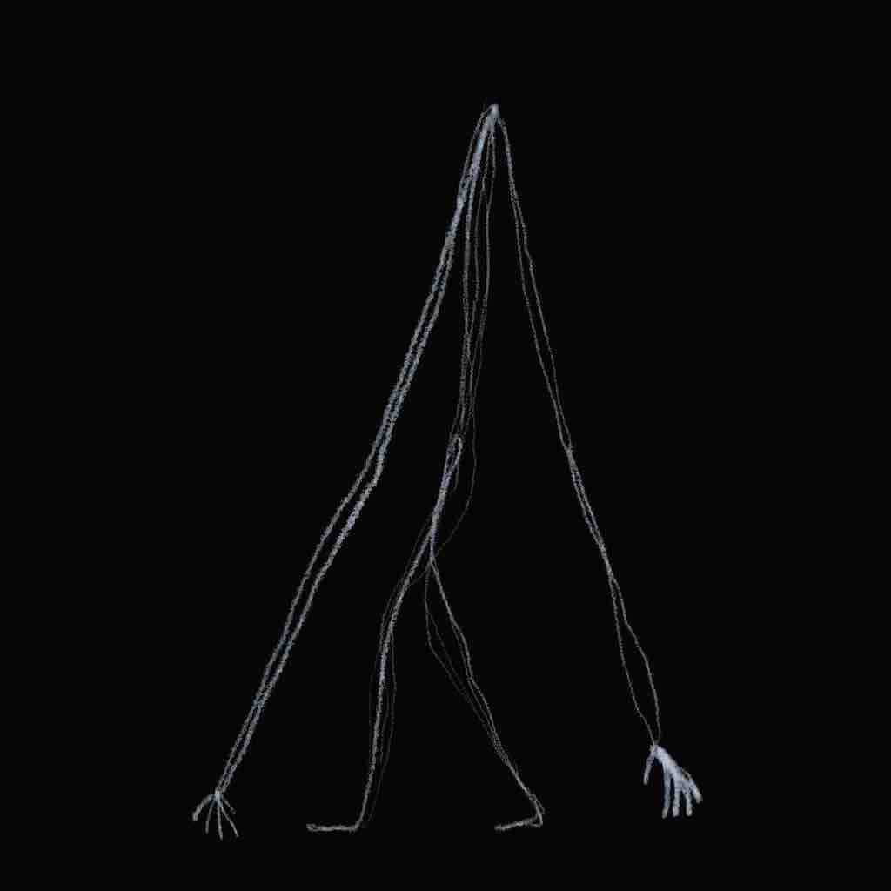
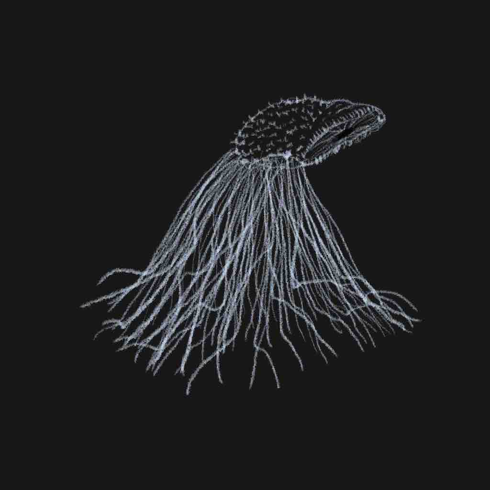
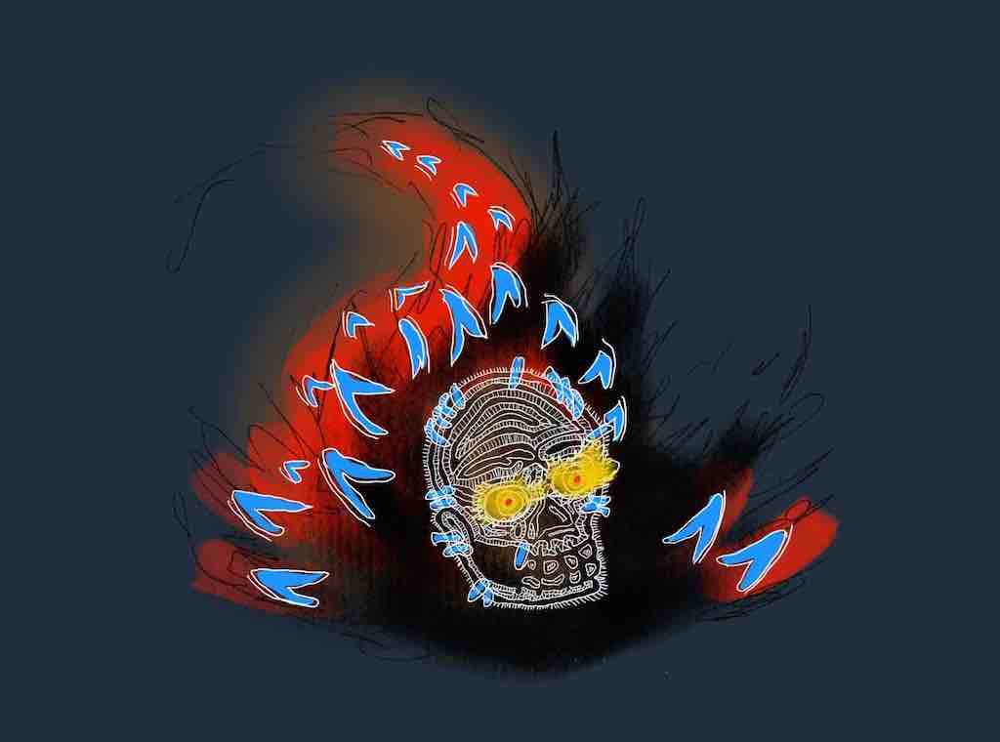
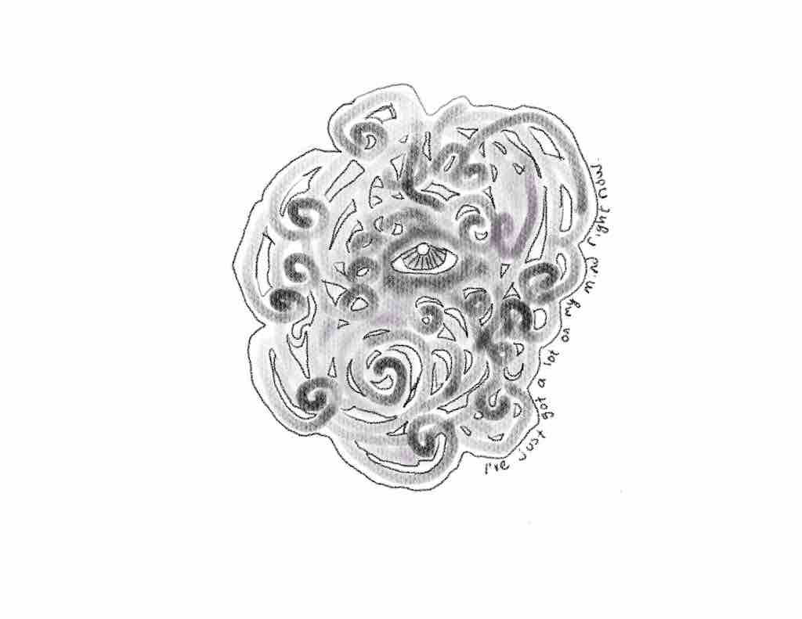

Drawing Corner
Every magazine needs corners! Here's this issue's second corner, the Drawing Corner!
Creepy Stuff!
Halloween was yesterday, but who cares. In this issue I have some creepy stuff.
As a child, I was a big fan of the book Scary Stories To Tell In The Dark. I really liked the creepy art style.
For this issue, I made some creepy looking drawings that aren't necessarily in the same style, but have a similar vibe.
Lanky Guy
This guy is really tall and he may, or may not, have a head.

Hairy Thing
This is kind of a mix between the sandworms from the new Dune movie and a bunch of cilia-like hair.

Stylish Skull
This is currently the wallpaper for my computer and iPad. It's a knock off of the Bubble enemies from the Zelda series.

Foggy
All through the covid situation I've been feeling more anxious than usual. This is a representation of that.
